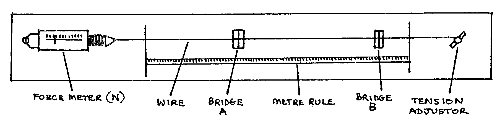

E1-1: The Frequency of Vibration of a Stretched String: Variation with Length and Tension¶
Apparatus¶
Sonometer with two bridges; set of tuning forks (frequencies \(256\) to \(512\text{Hz}\)); \(5\text{m}\) sample of sonometer wire; tuning fork hammer; sounding box; beam balance with masses; 2 sheets graph paper

Precaution: do not exceed the maximum tension (see label beside force meter). Place bridge A near the left hand end. Do not move it again.
Experiment 1: Procedure¶
To study how frequency varies with length and thus calculate the mass per unit length of the sonometer wire.
- Set the tension to \(20\text{N}\); throughout this experiment ensure that this remains constant. Record this value of tension.
- Strike the \(256\text{Hz}\) tuning fork with the hammer, and press the tip hard against the sounding box (do not touch the arms of the fork). Listen carefully to the note produced.
- Pluck the string between bridges \(A\) and \(B\), then move bridge \(B\) until the string makes exactly the same note as the fork. (Repeat step 2 to help the comparison).
- Record the frequency and the length \(AB\).
- Repeat steps 2, 3 and 4, using all the other forks in turn, up to \(512\text{Hz}\).
Experiment 1: Theory¶
For a string under tension, secured at both ends:
Where:
If \(T\) and \(m\) are constant, then \(f = k \left( \frac{1}{l} \right)\), where the constant \(k\) is \(\frac{1}{2} \sqrt{\frac{T}{m}}\).
Experiment 1: Analysis¶
- Plot a graph of \(f\) against \(\frac{1}{l}\) and find the gradient.
- Use the gradient, the value of tension and the theory to find the value of \(m\) – the mass per unit length of the wire.
Experiment 2: Procedure¶
To study how frequency varies with tension, and thus calculate the mass per unit length of the wire.
Place bridge \(B\) so that length \(AB\) is \(20\text{cm}\). Record this length.
Adjust the tension so that the string frequency is \(256\text{Hz}\) (use the tuning fork as described in experiment 1 procedure step 2.).
Record the values of tension and frequency.
Adjust the tension so that the string produces the frequencies of each of the other tuning forks. For each fork record the values of tension and frequency. Ensure that length \(AB\) remains constant throughout.
NB: DO NOT EXCEED THE MAXIMUM TENSION ALLOWED
Experiment 2: Theory¶
In this experiment, \(l\) and \(m\) are constant, therefore:
Experiment 2: Analysis¶
- Plot a graph of \(f\) against \(\sqrt{T}\), and find the gradient.
- Use the gradient, the value of length, and the theory to find the value of \(m\) – the mass per unit length of the wire.
Conclusion¶
Use the beam balance to measure the mass of the \(5\text{m}\) length of sonometer wire supplied. From this value calculate the mass per unit length of the wire. Assuming that this value is very accurate, calculate the % error in the values obtained from experiments 1 and 2.